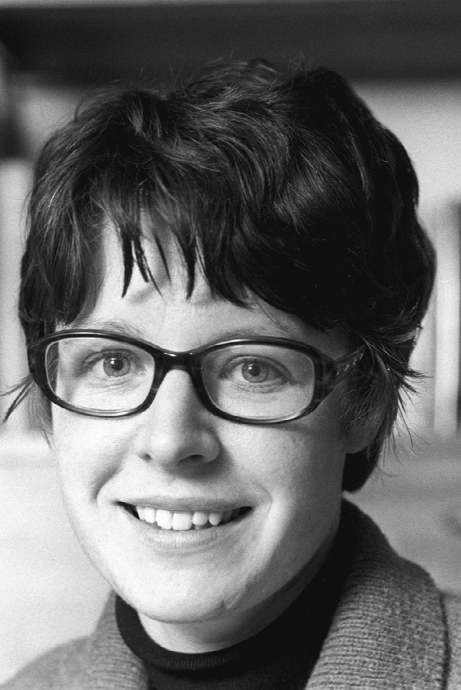
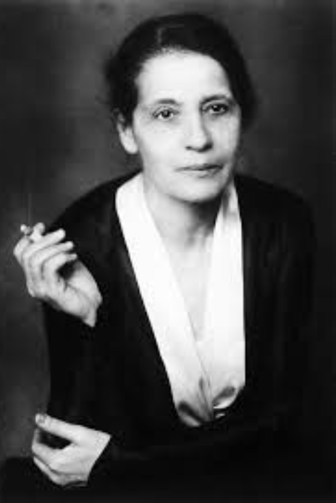
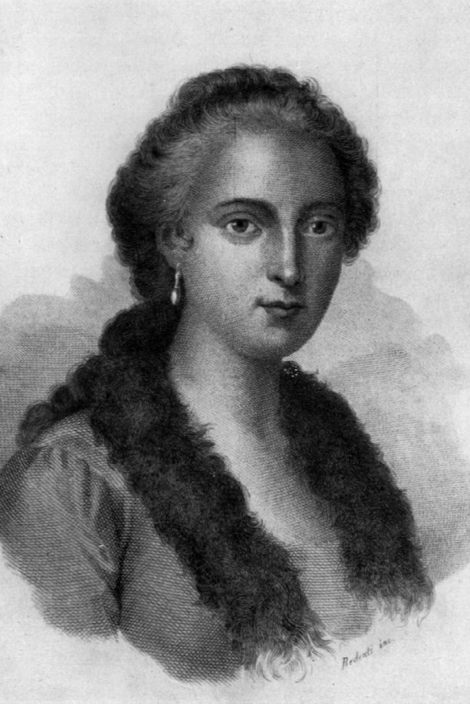
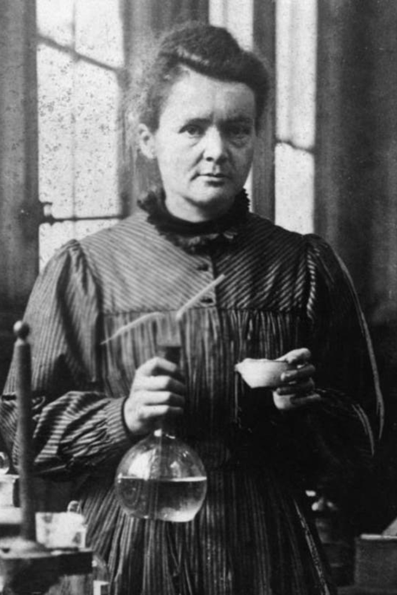
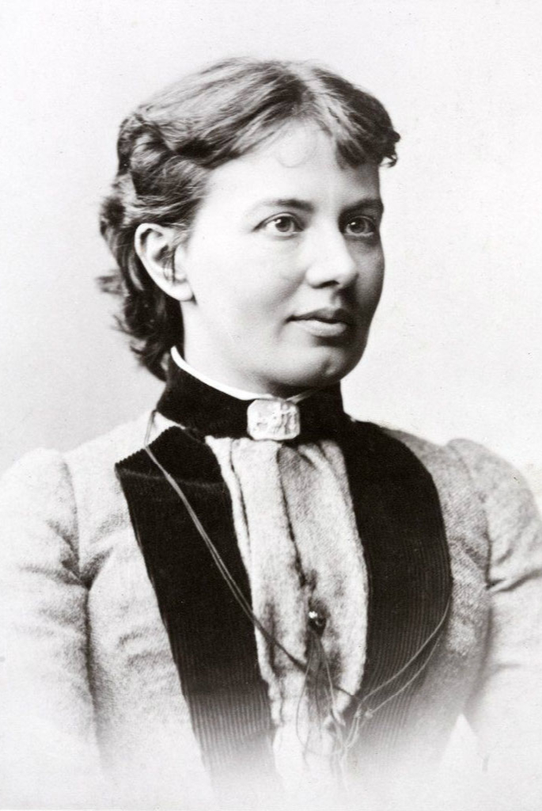

Ellas. Mujeres de Ciencia que inspiran
Con motivo de celebrar el Día Internacional de la Mujer y la Niña en la Ciencia, definido por la ONU el 11 de febrero, presentamos una muestra virtual reconociendo a algunas de las mujeres científicas que hicieron historia y que, sin dudas, son una inspiración para que más mujeres y niñas opten por carreras vinculadas a las ciencias. Ellas han demostrado que la voluntad y el saber son más fuertes que cualquier brecha cultural y social.

Ada Lovelace
(Reino Unido, 10/12/1815 - 27/11/1852)
Lovelace, tenía un don para combinar el arte y la ciencia. Su trabajo inspiró al Departamento de Defensa de Estados Unidos a nombrar un lenguaje de programación en su honor y, cada octubre, el Día de Ada Lovelace es una celebración de las mujeres en la tecnología.
+Info
Dorothy Crowfoot
(El Cairo, 12/05/1910 - Londres, 29/07/1994)
Dorothy Crowfoot fue una científica visionaria que obtuvo el Premio Nobel de Química en el año 1964 por la determinación de estructuras de sustancias de interés bioquímico mediante rayos X.
+Info
Hedwig Eva Maria Kiesler
(Austria, 09/11/1914 - Estados Unidos, 19/01/2000)
Conocida en Hollywood como Hedy Lamarr, fue una reconocida actriz e inventora austríaca propulsora, entre otras cosas, del wifi. De hecho, en Austria, el Día del Inventor se celebra el 9 de noviembre en su honor.
+Info
Joan Clarke
(Reino Unido, 24/06/1917 - 04/09/1996)
Matemática y criptoanalista, tuvo un rol central en la hazaña que implicó descifrar el Código Enigma utilizado por los alemanes, durante la Segunda Guerra Mundial.
+Info
Jocelyn Bell Burnell
(Reino Unido,15/07/1943)
Astrónoma irlandesa a la que se le atribuye, junto a Anthony Hewish, el descubrimiento de los púlsares: estrellas de neutrones que liberan ondas de radio a intervalos regulares. Es una de las primeras catedráticas de Física de Gran Bretaña.
+Info
Katherine Johnson
(Estados Unidos, 26/08/1918 - 24/02/2020)
Conocida como “la calculadora humana”, fue una física, científica espacial y matemática estadounidense que contribuyó a la aeronáutica de los Estados Unidos. Fue una de las primeras mujeres afroestadounidenses en trabajar como ingeniera en la NASA. Su papel fue clave para la llegada del hombre a la Luna.
+Info
Lise Meitner
(Viena, 07/11/1878 - Reino Unido, 27/10/1968)
Fue una física austríaca, descubridora de la fisión nuclear, un logro por el que su compañero de laboratorio Otto Hahn recibió el premio Nobel en 1944.
+Info
Lynn Margulis
(Estados Unidos, 05/03/1938 - 22/11/2011)
Se la considera una de las principales figuras dentro del campo de la evolución biológica. En su teoría endosimbiótica, propone que las células eucariotas se habrían originado a partir de diferentes células procariotas mediante una relación simbiótica que llegó a ser permanente.
+Info
María Gaetana Agnesi
(Milán, 16/05/1718 - 09/01/1799)
Matemática, filósofa, lingüista, filántropa, escritora y teóloga italiana. Su obra más importante, Instituciones Analíticas, fue utilizada para aprender matemáticas durante más de 50 años en países de Europa.
+Info
Maria Salomea Skłodowska-Curie
(Polonia, 07/11/1867 - Francia, 04/07/1934)
Conocida como Marie Curie, fue una física, matemática y química pionera en el campo de la radiactividad. Marie no solamente fue la primera mujer, sino que la primera persona en recibir dos Premios Nobel en Física y en Química.
+Info
Rosalind Franklin
(Londres, 25/07/1920 - 16/04/1958)
Científica inglesa, estudió de base Química y Física, doctorándose con estudios basados en la difracción de rayos X, técnica que la llevó a descifrar la estructura del AND.
+Info
Sofía Kovalevski
(Moscú, 15/01/1850 - Estocolmo, 10/02/1888)
Sofía Kovalévskaya fue una matemática y escritora rusa que hizo contribuciones significativas en los campos del análisis, las ecuaciones diferenciales parciales y la mecánica. Fue la primer mujer profesora de la Universidad de Estocolmo.
+Info